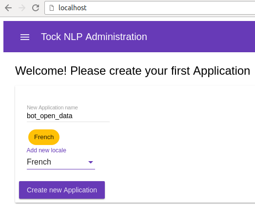
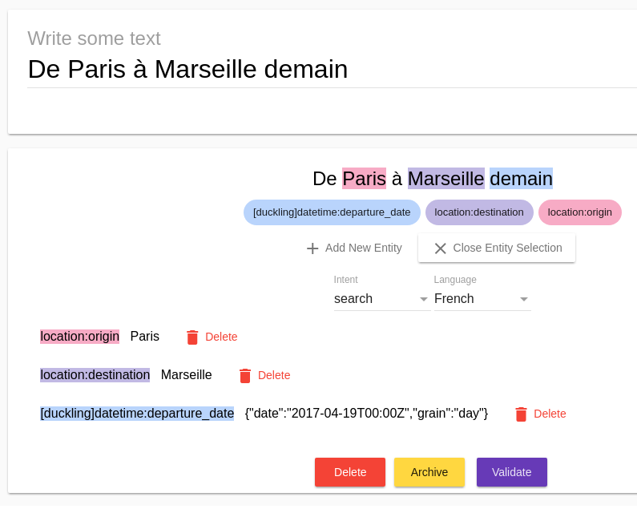

Commencer à utiliser Tock¶
Images Docker¶
Des images docker sont mises à disposition pour faciliter le démarrage dans le respository github https://github.com/voyages-sncf-technologies/tock-docker.
Pour l'instant ces images dockers ne sont pas disponibles dans un repository public. Il faut donc les reconstruire en ligne de commande.
Pré-requis¶
Les dernières versions de Docker et Docker Compose doivent être installées au préalable.
Pré-requis pour construire les images¶
Afin de construire les images dockers, vous aurez également besoin de Maven et Git.
Construction des images¶
- Récupérer le code source des images docker
git clone https://github.com/voyages-sncf-technologies/tock-docker.git
- Construire les images
cd tock-docker
mvn package docker:build
Démarrer l'interface d'administration¶
docker-compose up
L'interface d'administration NLP est maintenant disponible sur le port 80 :

Il est donc possible de commencer à qualifier et à créer des intentions et des entités :

Bot d'exemple basé sur des API Open Data¶
Un bot d'exemple utilisant Tock est mis à disposition sur github : https://github.com/voyages-sncf-technologies/tock-bot-open-data.
Il se base sur les API Open Data de la SNCF, et présente des fonctionnalités minimales permettant de démontrer l’usage de Tock.
Ce bot sera bientôt disponible sur Facebook Messenger et les futures autres connecteurs mis à disposition. L'interface d'administration dédiée sera également disponible en lecture seule sur le web.